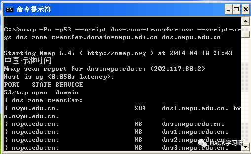

DNS域传送漏洞(二)
/1_aPbK6xQJIHiaUOB16u0KcQnicDG9pg.png)
本篇将介绍使用nmap扫描器和dig来得到DNS Zone Transfer记录。
3)使用nmap扫描DNS域传送泄露漏洞
使用nmap扫描器附带的脚本，可以扫描DNS服务器是否存在域传送漏洞。语法为：
nmap --script dns-zone-transfer --script-args dns-zone-trans
fer.domain=nwpu.edu.cn -p 53 -Pn dns.nwpu.edu.cn
对上述命令命令说明如下：
nmap –script dns-zone-transfer表示加载nmap文件夹下的脚本文件dns-zone-transfer.nse，扩展名.nse可省略
–script-args dns-zone-transfer.domain=zonetransfer.me向脚本传递参数，设置列出记录的域是nwpu.edu.cn
-p 53设置扫描53端口
-Pn设置通过Ping发现主机是否存活
在虚拟机中执行结果如下图所示:

图中dns-zone-transfer后面的部分列出了域中所有的记录。nmap是跨平台的扫描工具，在Linux下照常工作。若使用Ubuntu Linux，可使用apt-get install nmap安装。
4）Dig命令
在Linux下除了使用nmap扫描器，还可以用dig来测试DNS服务器是否存在域传送泄露。Dig是一个非常强大的DNS查询工具，输入“dig -h”查看它的使用说明。鉴于参数较多，以下是经过笔者精简的说明，只留下最常用的几个参数：
root@li377-156:~# dig -h
Usage: dig [@global-server] [domain] [q-type] [q-class] {q-opt}
{global-d-opt} host [@local-server] {local-d-opt}
[ host [@local-server] {local-d-opt} [...]]
Where: domain is in the Domain Name System
q-class is one of (in,hs,ch,...) [default: in]
q-type is one of (a,any,mx,ns,soa,hinfo,axfr,txt,...) [default:a]
(Use ixfr=version for type ixfr)
q-opt is one of:
-x dot-notation (shortcut for reverse lookups)
-t type (specify query type)
d-opt is of the form +keyword[=value], where keyword is:
+[no]cmd (Control display of command line)
+[no]comments (Control display of comment lines)
+[no]question (Control display of question)
+[no]answer (Control display of answer)
+[no]authority (Control display of authority)
+[no]additional (Control display of additional)
+[no]stats (Control display of statistics)
+[no]short (Disable everything except short
form of answer)
+[no]all (Set or clear all display flags)
global d-opts and servers (before host name) affect all queries.
local d-opts and servers (after host name) affect only that lookup.
-h (print help and exit)
-v (print version and exit)
一个最简单的例子，查询www.lijiejie.com的A记录:
root@li377-156:~# dig @8.8.8.8 www.lijiejie.com
; <<>> DiG 9.8.1-P1 <<>> @8.8.8.8 www.lijiejie.com
; (1 server found)
;; global options: +cmd
;; Got answer:
;; ->>HEADER<<- opcode: QUERY, status: NOERROR, id: 28838
;; flags: qr rd ra; QUERY: 1, ANSWER: 1, AUTHORITY: 0, ADDITIONAL: 0
;; QUESTION SECTION:
;www.lijiejie.com. IN A
;; ANSWER SECTION:
www.lijiejie.com. 9 IN A 106.187.34.156
;; Query time: 199 msec
;; SERVER: 8.8.8.8#53(8.8.8.8)
;; WHEN: Sun Apr 20 09:38:32 2014
;; MSG SIZE rcvd: 50
@8.8.8.8.8指定DNS服务器，如果使用系统默认DNS，可不提供。参数q-type指定查询类型，默认值为A记录，也可不提供。
上述查询结果非常详尽，分作多个区块，为了让初次接触dig的读者不至于陷入迷糊，分别说明：
1) 3到5行是cmd区块,通过添加+nocmd参数，可以不显示
2) 6到8行是comments区域，通过+nocomments参数控制不显示
3) 10到11行是question区域，通过+noquestion参数控制不显示
4) 13到14行是answer区域，通过+noanwser参数控制不显示
5) 16到19行是stats区域，通过+nostats参数控制不显示
如果不想查看详细结果，那么可以使用+short参数只查看answer区域的精简结果。下面的例子查询A记录，就只显示一个IP地址：
root@li377-156:~# dig www.lijiejie.com +short
106.187.34.156
若查询MX邮件交换记录，将q-type参数设定为mx：
root@li377-156:~# dig weibo.com mx +short
10 mx.weibo.com.
若通过IP反查域名，则提供-x参数，像下面的例子这样：
root@li377-156:~# dig -x 8.8.8.8 +short
google-public-dns-a.google.com.
其他ns、txt记录依次类推。若要一次性查询所有的类型，直接使用any即可:
root@li377-156:~# dig weibo.com any +short
10 mx.weibo.com.
"v=spf1 include:spf.weibo.com -all"
ns1.sina.com.cn. zhihao.staff.sina.com.cn. 1 28800 7200 604800 600
ns1.sina.com.cn.
ns3.sina.com.
ns4.sina.com.
ns3.sina.com.cn.
ns2.sina.com.cn.
ns4.sina.com.cn.
180.149.134.18
180.149.134.17
因为使用了+short参数，所以读者朋友需要注意结果中都代表了什么：
1) 第1行是MX记录
2) 第2行是TXT记录
3) 第3行是SOA记录
4) 第4到9行是NS记录
5) 第10到11行是A记录
前面介绍了dig的使用，若将查询类型设定为axfr，就能得到域传送数据。这也是我们要用来测试DNS域传送泄露的命令：
root@li377-156:~# dig @dns.nwpu.edu.cn axfr nwpu.edu.cn
; <<>> DiG 9.8.1-P1 <<>> @dns.nwpu.edu.cn axfr nwpu.edu.cn
; (1 server found)
;; global options: +cmd
nwpu.edu.cn. 86400 IN SOA dns1.nwpu.edu.cn. hxn.nwpu.edu.cn. 2014041801 21600 3600 604800 10800
nwpu.edu.cn. 86400 IN NS dns.nwpu.edu.cn.
nwpu.edu.cn. 86400 IN NS dns1.nwpu.edu.cn.
nwpu.edu.cn. 86400 IN NS dns2.nwpu.edu.cn.
nwpu.edu.cn. 86400 IN NS dns3.nwpu.edu.cn.
nwpu.edu.cn. 600 IN MX 5 nwpu03.nwpu.edu.cn.
nwpu.edu.cn. 600 IN MX 15 nwpu03.nwpu.edu.cn.
*.nwpu.edu.cn. 86400 IN A 222.24.192.99
aisheng.nwpu.edu.cn. 86400 IN CNAME www.nwpu.edu.cn.
amec.nwpu.edu.cn. 86400 IN NS netserver.amec.nwpu.edu.cn.
(省略大量的记录...)
nwpu.edu.cn. 86400 IN SOA dns1.nwpu.edu.cn. hxn.nwpu.edu.cn. 2014041801 21600 3600 604800 10800
;; Query time: 110 msec
;; SERVER: 202.117.80.2#53(202.117.80.2)
;; WHEN: Sun Apr 20 15:11:32 2014
;; XFR size: 188 records (messages 1, bytes 4021)
请注意，参数axfr后跟需要列出的域的名称。上面的例子是nwpu.edu.cn。只要命令输出中存在“XFR size”即代表该服务器存在漏洞。
文章来自互联网，如有侵权，请联系删除